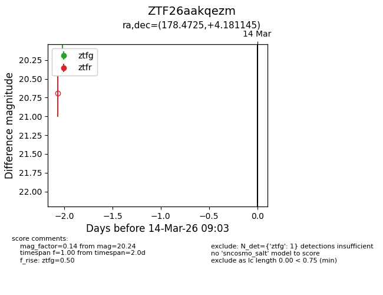
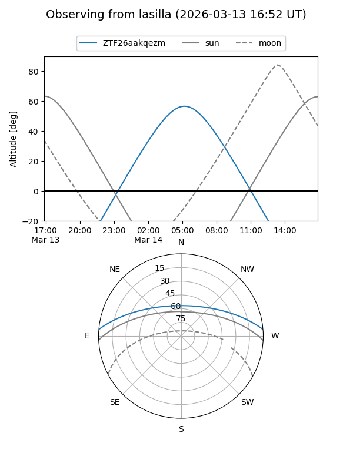
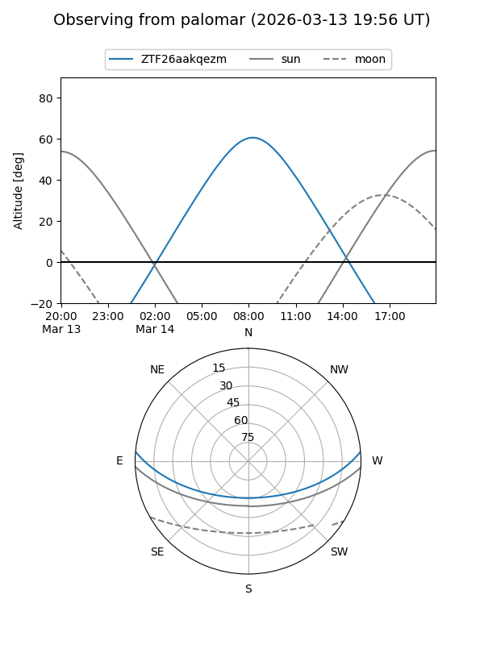

ZTF26aakqezm
Target ZTF26aakqezm at 2026-03-14 09:05
Aliases and brokers:
FINK: link
Lasair: link
ALeRCE: link
alt names
ZTF26aakqezm (ztf,fink_ztf)
Coordinates:
equatorial (ra, dec) = 178.4725,+4.18115
equatorial (HMS+DMS) = 11:53:53.39,+04:10:52.12
galactic (l, b) = (269.5177,+63.25637)
Flags:
Photometry:
last ztfg=20.24
1 ztfg detections
Lightcurve

Visibility


Additional plots